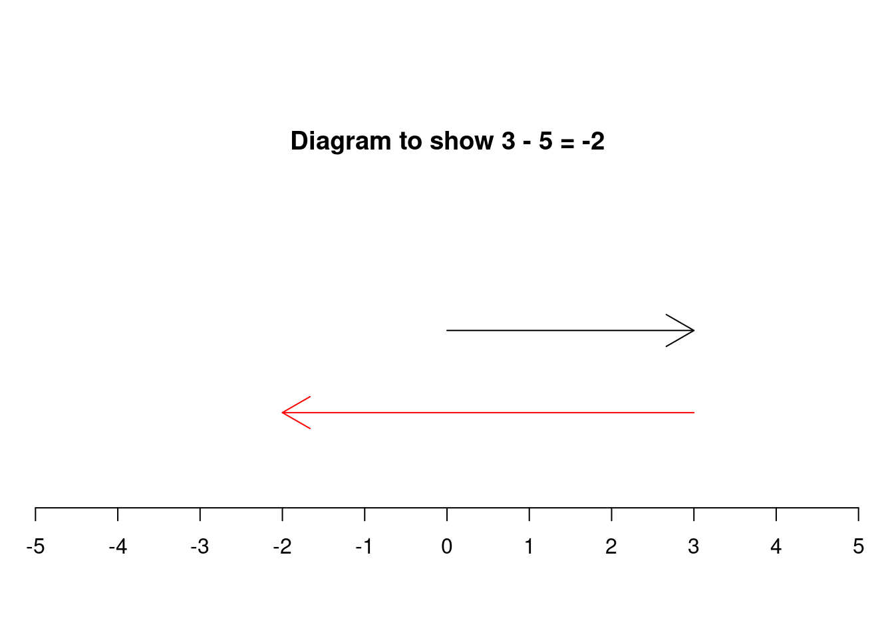

1 Negative numbers
On a number line negative numbers are typically written to the left of zero and have values smaller than zero. Negative numbers are tricky. Often when an error creeps into a calculation it’s due to a misplaced minus sign, they are a source of problems for everyone - don’t worry if they seem tricky, they have only relatively recently lost their mysteriousness. The evidence of humans counting dates from \(35,000\)BCE yet as recently as \(1758\) British mathematician Francis Maseres said that negative numbers…
“… darken the very whole doctrines of the equations and make dark of the things which are in their nature excessively obvious and simple”.
1.1 Multiplication and Division
When multiplying and dividing using negative numbers the answer will be the same as the equivalent calculation with positive numbers only, but, you may have to change the sign - to either positive or negative. The rules for deciding if the answer is positive or negative are below:
- positive \(\times\) positive \(=\) positive
- negative \(\times\) positive \(=\) negative
- positive \(\times\) negative \(=\) negative
- negative \(\times\) negative \(=\) positive
Notice that the order is not important. Here are some examples: \[ -2 \times 3 = -6 \] \[ 10 \times -5 = -50 \] \[ -4 \times -6 = 24 \] If you have more that two numbers to multiplying you can just count the number of negative numbers and apply the following rule:
- If the total number of negative numbers is even the answer is positive.
- If the total number of negative numbers is odd the answer is negative.
Here’s a longer example: \[ -2 \times -2 \times -2 \times -2 = 16 \] since there are even number of negatives in the question the answer will be positive.
Since division and multiplication are so closely related, division works in exactly the same way. For example: \[ \frac{-3 \times -6}{-9} = -2 \].
You can practice these techniques with the following questions. You can refresh the question to change the numbers. Try them as much as you like.
1.1.1 But why?!!?
Building a physical idea of a negative number is tricky. For example thinking of \(2 \times 3\) as two lots of 3 things is fine, but what does \(-2 \times -3\) even mean? Hopefully but looking at the pattern below it will be become clear that our definition of what happens with two negative numbers (i.e. two negatives multiply to get a positive) is the only one that makes sense.
Consider extending the two times table into negative numbers.
\[ \begin{array}{ccccc} 3 &\times& 2& =& 6\\ 2 &\times& 2& =& 4\\ 1 &\times& 2& =& 2\\ 0 &\times& 2& =& 0\\ -1 &\times& 2& =& -2\\ -2 &\times& 2& =& -4\\ -3 &\times& 2& =& -6\\ \end{array} \]
The result of the mulitplication decreases by two each time - the pattern continues into the negative numbers.
Now lets look at the patter with the negative two times table.
\[ \begin{array}{ccccc} 3 &\times& -2& =& -6\\ 2 &\times& -2& =& -4\\ 1 &\times& -2& =& -2\\ 0 &\times& -2& =& 0\\ -1 &\times& -2& =& 2\\ -2 &\times& -2& =& 4\\ -3 &\times& -2& =& 6\\ \end{array} \]
Notice how as we multiply \(-2\) by a smaller number the result increases. Continuing the pattern to multiply \(-2\) by a negative number naturally gives us a postive result.
Our definition fits the pattern. Horrah!
1.2 Addition and subtraction
It helps to think about addition and subtraction of negative numbers on a number line. We can think about positive numbers as arrows pointing forwards, shifts to the right from zero, and negative numbers as arrows backwards, shifts to the left. Add to this the idea that addition and subtraction is then combining these arrows. When you add two numbers you place them one after another, the end of the second arrow on the tip of the first. With subtraction you reverse the direction of the second arrow and then place them together just like addition.

Consider the following examples:
- \(3 - 5 = -2\) can be thought of as: start at three then move five back to the left.
- \(-4 + 1 = -3\), start at \(-4\) then move one to the right.
- \(5 + - 2 = 3\), start at \(5\) then add on a shift of \(2\) to the left.
- \(1 - - 3 = 4\), start at \(1\) then reverse a shift of \(3\) to the left (I know it seams bonkers!). The double negative cancels out to give a calculation equivalent to \(1 + 3 = 4\).
It’s tempting to cling on to the idea that two negatives make a positive when it comes to addition and subtraction. But consider the following statements, they are all correct, but imagine how easy it is to be confused if you just apply the two negatives make a positive rule.
- \(-3 - 5 = -8\)
- \(-10 - -4 = -6\)
You can practice these techniques with the following questions. The numbers change each time to try them as much as you like.